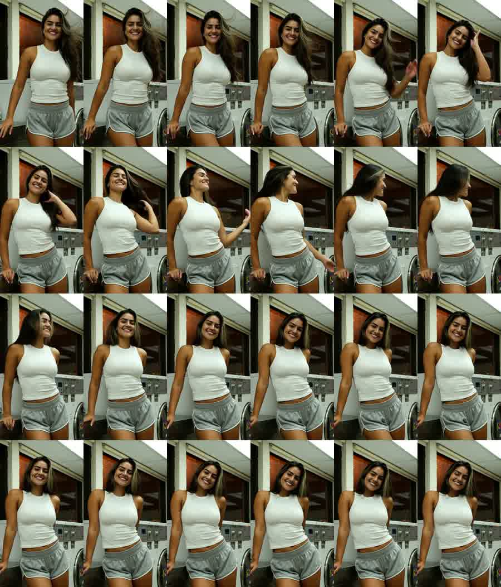
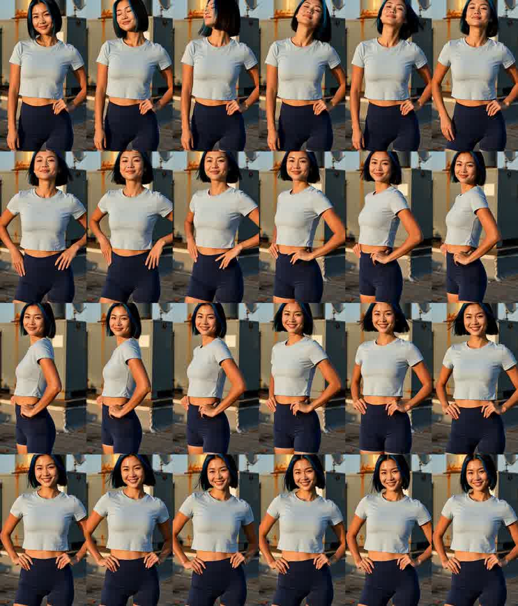
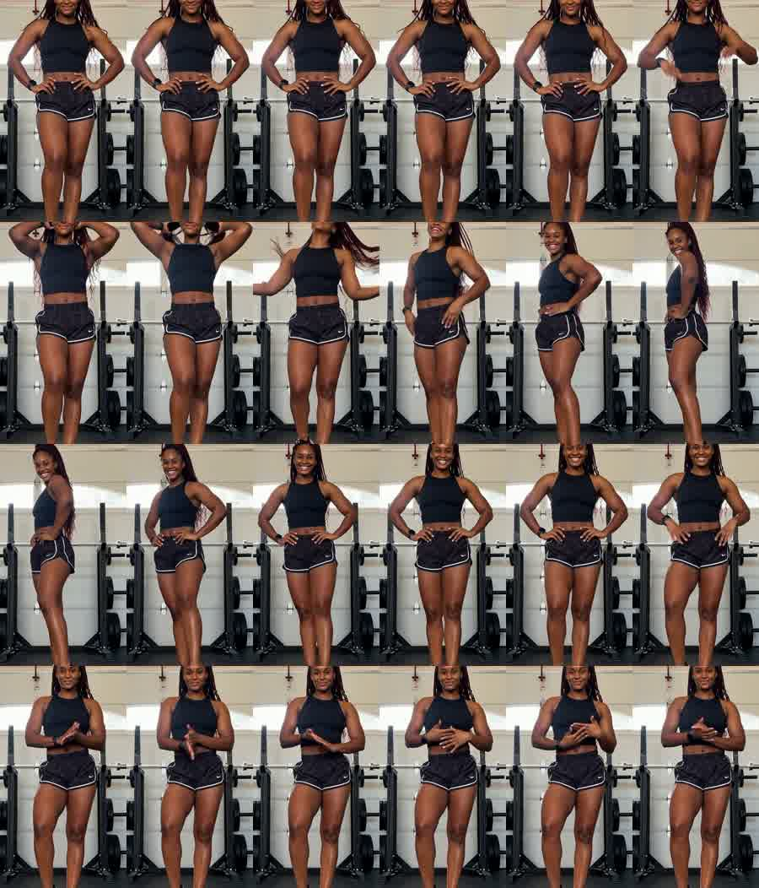
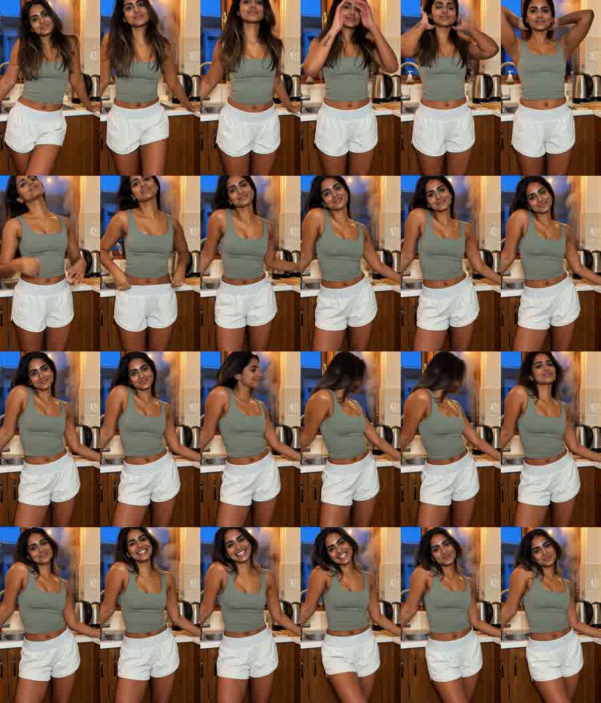
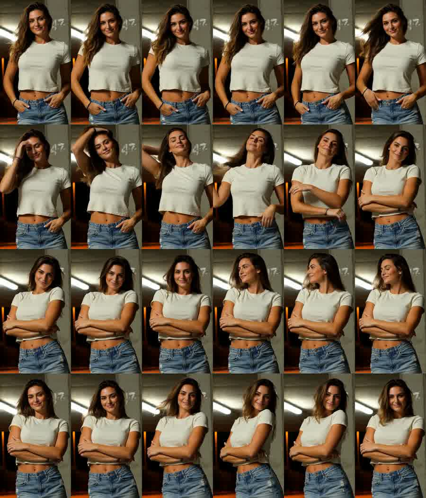
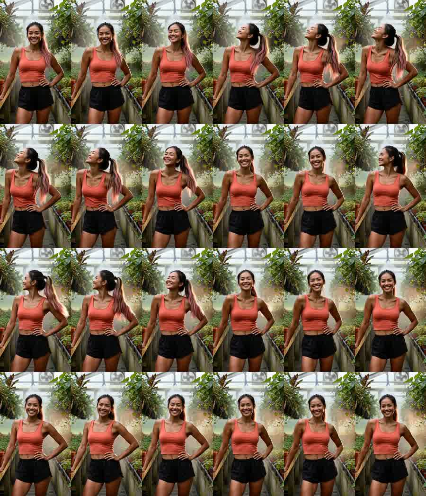
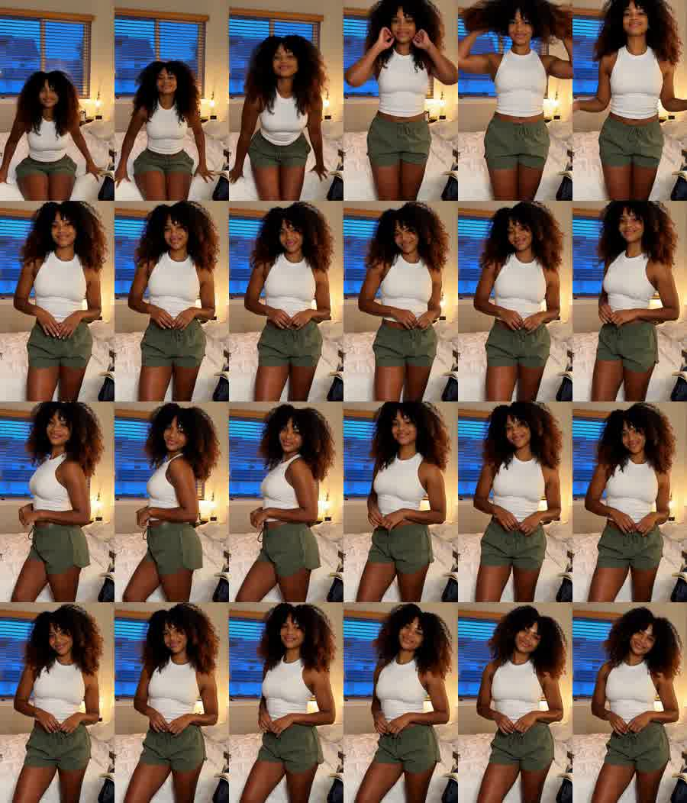
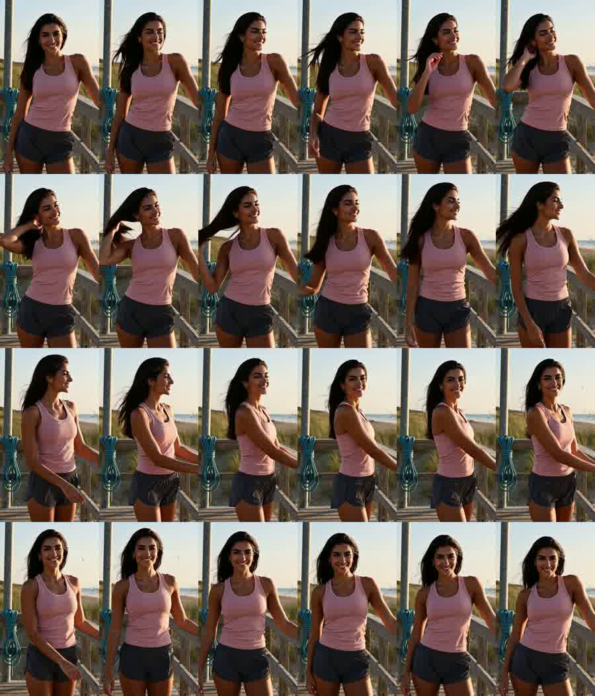
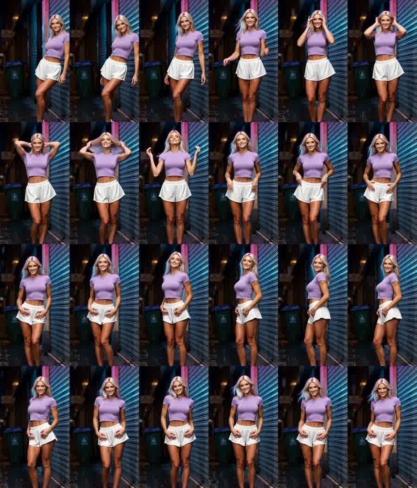
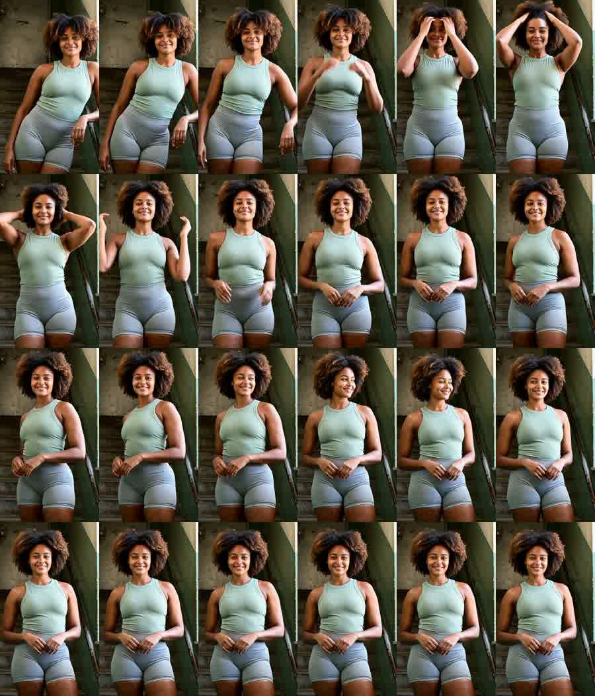

Every clip: one unbroken 15.083s take, vertical, music on, a different woman and a different location, no cuts anywhere. Red is the render as it came out of the model; green is after the geometric crop that brings her to the 0.844 subject-width measured across 131 competitor reels — and which corrects the off-centre drift in the same operation.

Latina · honey-blonde streaks
width 0.511 → 0.756 · centre 0.442 → 0.498
464x812 · 15.083s · one unbroken take

East Asian · electric-blue streak
width 0.589 → 0.767 · centre 0.494 → 0.503
534x936 · 15.083s · one unbroken take

Black · box braids, burgundy tips
width 0.489 → 0.733 · centre 0.492 → 0.504
444x778 · 15.083s · one unbroken take

South Asian · caramel balayage
width 0.611 → 0.767 · centre 0.356 → 0.463
554x972 · 15.083s · one unbroken take

Mediterranean · chestnut waves
width 0.378 → 0.8 · centre 0.544 → 0.5
504x884 · 15.083s · one unbroken take

SE Asian · pink streak
width 0.644 → 0.722 · centre 0.569 → 0.536
586x1024 · 15.083s · one unbroken take

Afro-Latina · copper highlights
width 0.556 → 0.767 · centre 0.398 → 0.508
504x884 · 15.083s · one unbroken take

Middle Eastern · long dark hair
width 0.633 → 0.722 · centre 0.417 → 0.472
576x1008 · 15.083s · one unbroken take

Platinum · lilac underlayer
width 0.689 → 0.633 · centre 0.485 → 0.528
626x1096 · 15.083s · one unbroken take

East African · honey streaks
width 0.544 → 0.778 · centre 0.506 → 0.515
494x866 · 15.083s · one unbroken take